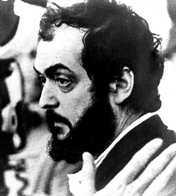
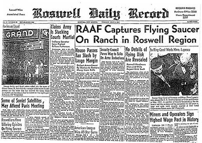
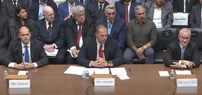

Space Wars
Two histories of space. One was broadcast. One was classified. Both are real. After 53 years, the question isn’t whether we went to the Moon. It’s what happened after we got there.
The Foundation
The Rocket Men
Every history of the American space program begins with a lie of omission. We are told the story of brilliant engineers who reached for the stars. We are not told where they came from.
Von Braun wasn’t alone. Kurt Debus, V-2 launch director and former SS member, became the first director of Kennedy Space Center. Arthur Rudolph, who used slave labor at Mittelbau-Dora, managed the Saturn V program. Hubertus Strughold, the “Father of Space Medicine,” conducted experiments tied to Dachau concentration camp. He has a library named after him at Brooks Air Force Base.
These were not junior technicians swept up in a regime. They were architects of weapons of mass destruction. And they built NASA.
Building NASA
The National Aeronautics and Space Act of 1958 created NASA as a civilian agency. But from day one, its personnel, its technology, and its institutional DNA came from the military — and before that, from the Third Reich.
The Race
What followed was the most dramatic engineering sprint in human history. In eleven years — from Sputnik (1957) to Apollo 8 (1968) — humanity went from no satellite in orbit to humans circling the Moon.
The official story is inspiring: Kennedy’s challenge, the Right Stuff, American ingenuity. And much of it is true. Hundreds of thousands of engineers worked on Apollo. The Saturn V remains the most powerful rocket ever flown. The achievement was real.
But the broadcast? That’s where the story gets complicated.
The Broadcast
On July 20, 1969, an estimated 600 million people watched Neil Armstrong step onto the Moon. It was the most-watched broadcast in human history. It was also the beginning of a fracture in public trust that has never healed.
This is not a “we never went” argument. The evidence strongly suggests we did go. The question is whether what was broadcast is what actually happened — and what was found when we got there.
The Filmmaker

To be clear: the existence of the technology to fake a broadcast does not prove the broadcast was faked. But it creates a capability — one that existed at exactly the right time, in exactly the right hands, during a geopolitical race where failure was not an option.
The Missing Record
Consider what this means. NASA claims to have achieved the most significant technological feat in human history — and then recorded over the primary evidence. No institution with nothing to hide destroys its crown jewel.
The Silent Astronaut
Neil Armstrong — the first human to walk on the Moon — became one of the most famously reclusive public figures in American history. He gave almost no interviews. He avoided the spotlight. He became a professor of aerospace engineering at the University of Cincinnati and disappeared from public life.
What does the first man on the Moon mean when he says truth has “protective layers”? His audience that day included students. He appeared to be fighting back tears. He never elaborated.
The Lost Technology

The Radiation Question
If Apollo solved the radiation problem in 1969 with aluminum hull plating, why did NASA need 5,600 sensors, radiation vests, and a Nature paper to validate it 55 years later? If the heat shield technology is mature, why did it fail on the first test in an unpredicted way?
The standard answer: different electronics, higher safety standards, better measurement capability. The uncomfortable question: then why does the Artemis program look like it’s solving these problems for the first time?
Two Histories
Like the show For All Mankind, where an alternate history of space plays out alongside the one we know — our actual world contains two competing narratives about what happened. They stand at odds. And they’re both supported by evidence.
Meanwhile, robotic lunar capability has advanced dramatically. China landed on the far side of the Moon (2019), returned samples from it (2024). India landed near the south pole (2023). Japan demonstrated precision landing (2024). Seven successful robotic missions since 2013 — from four different countries. Crewed missions beyond low Earth orbit: zero. For 54 years. The gap between “we can land a robot” and “we can land a human” appears to have grown, not shrunk.
The damage to public trust is the point. Whether the broadcast was real or staged, the pattern of destroyed evidence, reclusive astronauts, “lost” technology, and contradictory engineering claims has created a fracture. 53 years without a human beyond low Earth orbit. That gap is not explained by budget cuts alone.
The Testimony
The alternative narrative isn’t held together by internet speculation. It’s held together by the testimony of credentialed people — astronauts, military officers, intelligence officials, NASA employees — who risked their careers and reputations to say the same thing: what we were told is not what happened.
The Astronauts

The NASA Insiders


The Disclosure Project
The Officers


The Pattern
Notice the pattern. These are not anonymous internet commenters. They are astronauts, colonels, defense ministers, NASA employees, NSA-cleared technicians. They describe the same thing across decades: non-human technology exists, the government knows, the evidence is suppressed.
Every one of them paid a price. Careers ended. Reputations destroyed. The consistent penalty for speaking is itself evidence of institutional coordination.
The Black
If the public space program stopped in 1972, where did the technology — and the money — go?
The Shadow Agency
Think about what this means. For three decades, the U.S. government operated a space agency that the public didn’t know existed. If they hid an entire agency for 31 years, what else is compartmentalized?
The Missing Money
$21 trillion. Unaccounted for. And now, legally, the government can keep secret books. The black budget — estimated at $50–80 billion annually for classified programs — is the disclosed portion. What Skidmore found dwarfs even that.

The Classified Orbiter
The Hacker

The Breakaway Civilization

The Warning

The Disclosure
Something shifted in 2017. After decades of ridicule and denial, the wall began to crack. Not from the outside — from the inside.
The Crack Opens
The Whistleblower


The Legislation
The Resistance
For every step forward, there has been institutional pushback. AARO (All-domain Anomaly Resolution Office), the Pentagon’s official UAP investigation body, has over 2,000 cases on file. Its 2025 annual report has not been published. Its former director, Sean Kirkpatrick, clashed publicly with congressional investigators and whistleblowers.
The Schumer-Rounds UAP Disclosure Act was gutted before passage. The strongest provisions — subpoena power, eminent domain over recovered materials — were stripped. Someone does not want this information released.
The Question
Today — April 1, 2026 — Artemis II launched from Kennedy Space Center. Four astronauts are heading to the Moon for the first time in 53 years. They will loop around the far side and return. They will not land.
Where We Are
Here is the state of space in April 2026:
- NASA was gutted by DOGE — 20% of its workforce (~4,000 people) departed through a deferred resignation program. The White House proposed the lowest NASA budget since 1961. Congress rescued it with bipartisan supermajorities ($24.4B). NASA is now recruiting to replace the people it just fired.
- SpaceX controls 84% of U.S. launches — a near-monopoly on crewed spaceflight. Musk briefly threatened to decommission Dragon during a contract dispute. One person controls America’s access to space.
- All four Block 2 Starships failed in 2025 — the vehicle that was supposed to land astronauts on the Moon has not successfully completed an upper-stage mission. Only 5 launches occurred versus the 25 projected.
- Golden Dome — a $185 billion space-based missile defense constellation of thousands of armed satellites. The first American weapons in orbit. Cost estimate already rose $10B in a single month.
- Space Force budget: approaching $40 billion — with reconciliation funding, a 40% increase in one year. For context, NASA’s entire budget is $24.4B.
- alien.gov and aliens.gov — registered by the White House. Not yet active. No files released.
- China targets a crewed lunar landing by 2030 — and is arguably closer to achieving it than the U.S.
The Convergence
All of these threads are converging. The UAP disclosure movement and the space program are the same story seen from different angles. If non-human intelligence has been interacting with humanity — as multiple credentialed witnesses under oath have stated — then the space program is not what it appears to be. The 53-year gap is not a gap. It’s a compartmentalization.
It’s whether we ever came back.
Artemis II is flying right now. Four humans are heading toward the Moon as you read this. It has been 53 years, 3 months, and 20 days since the last time. Whatever they find — or whatever they’re allowed to tell us they found — the old narrative is already crumbling.
The question is no longer are we alone. Too many people with too many clearances have answered that. The question is: what happens when the rest of us find out?
Disclosure is not a single event. It’s a process. And it only works if people are paying attention.